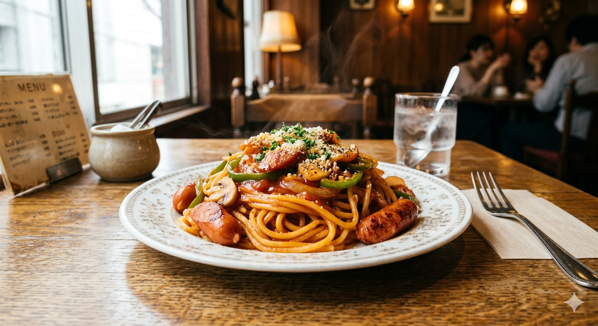
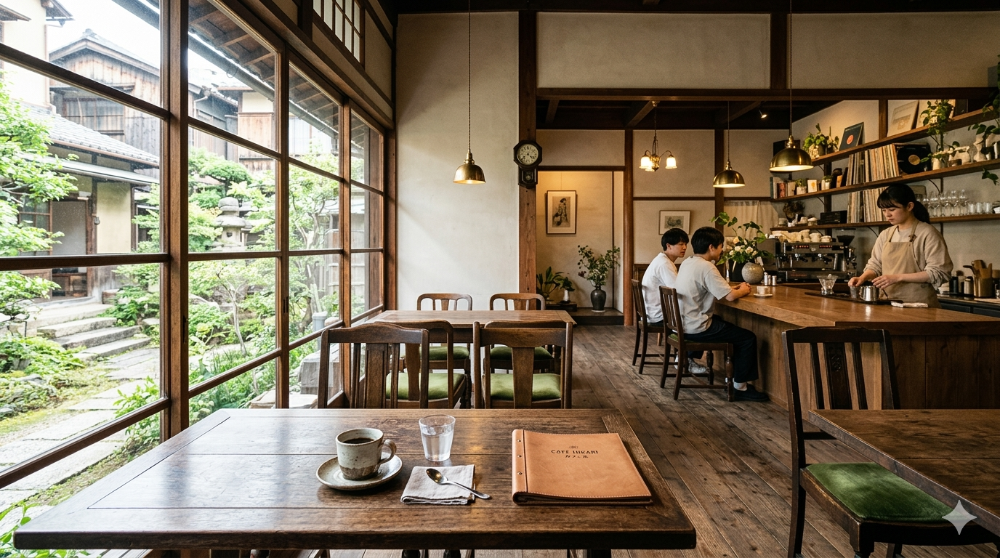
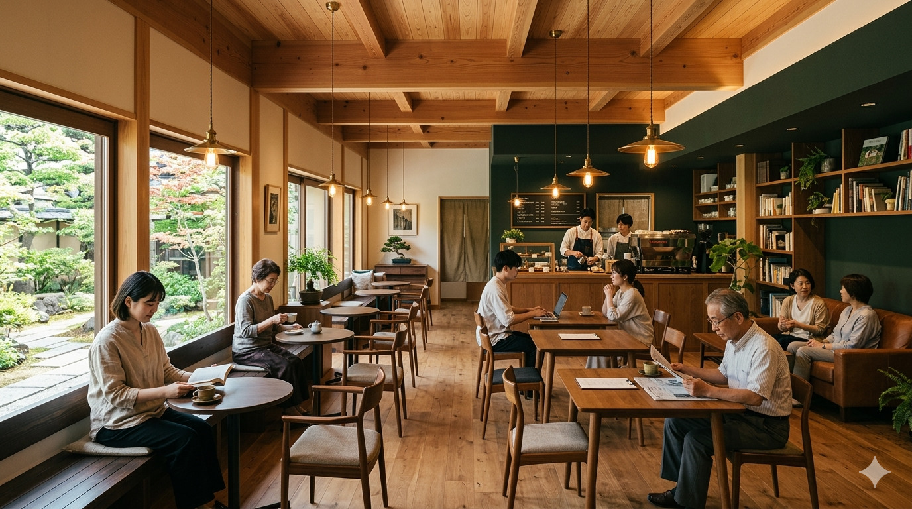
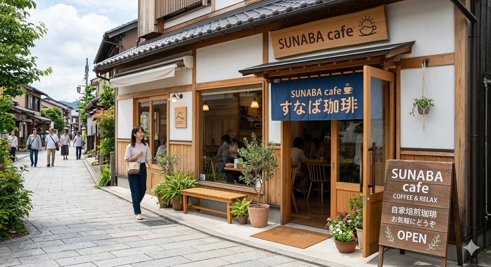

日常に、おいしい深呼吸を。
灯る、香る、くつろぐ。
懐かしいのに、あたらしい。
About
SUNABA CAFE（すなばカフェ）
駅近の落ち着いた空間で、ナポリタンとコーヒーをゆっくり楽しめる、洗練と心地よさが同居するカフェです。
Master & Philosophy
マスターの手仕事と、毎日に寄り添う一杯
SUNABA CAFEのマスターは、喫茶文化の懐かしさと今の軽やかさを同じ一杯に同居させることを大切にしています。
焙煎度や抽出時間を細かく調整し、食事の余韻まで含めて心地よく感じられるよう、味の輪郭を静かに整えています。
- 豆の選定
- ナポリタンの旨みと重なっても重くなりすぎないブレンド設計。
- 抽出の姿勢
- その日の気温・湿度に合わせ、濃度と温度のバランスを微調整。
- 空間の配慮
- 香り・光・音量まで含めて、深呼吸できる滞在感をつくる。
Space & Facility
静かな時間を過ごせる、ゆとりある店内


- Wi-Fi
- コンセント
- 40席 / 全席禁煙
- 駐車場あり
- テイクアウト可
- 現金 / クレジットカード / QR決済
Commitment
また立ち寄りたくなる理由
昔ながらの喫茶店の温かさを土台に、光・余白・器・味わいまで整え、自然にまた立ち寄りたくなる空間づくりを大切にしています。
Access & Information
店舗情報

- Shop
- SUNABA CAFE
- Address
- 〒794-0015 愛媛県今治市常盤町4-8-18 しまなみイノベーションビル2階
- Hours
- Open 9:00 - Close 20:00
- Closed
- Closed on Tuesday
- Payment
- Cash / Credit / QR
- Seat
- 40 seats / Non-smoking / Parking available
- Phone
- 070××××××××